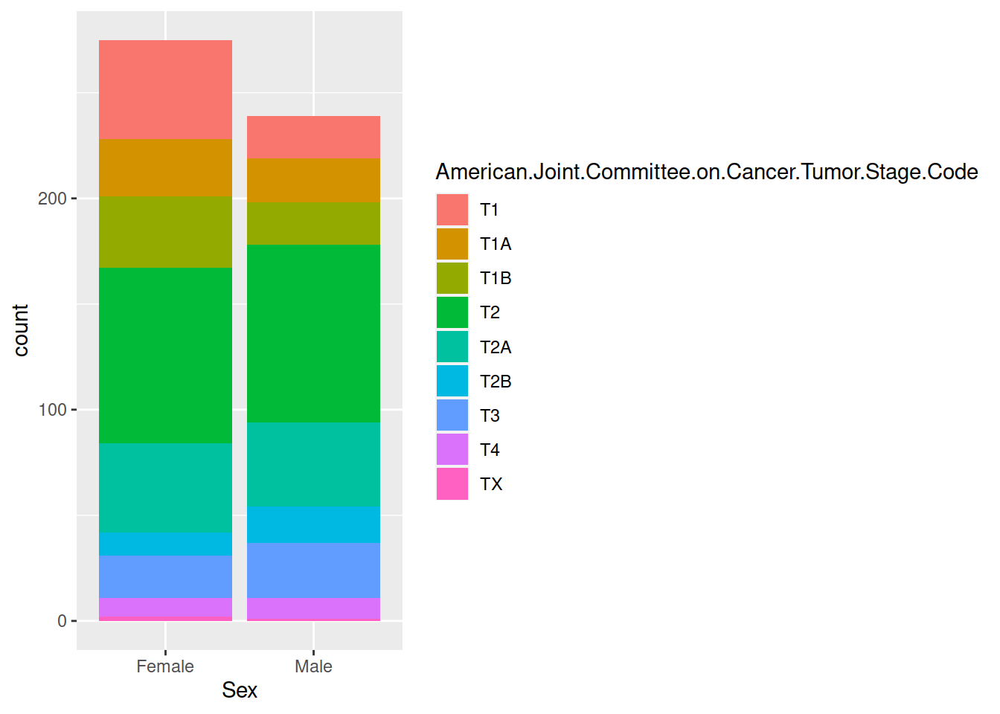
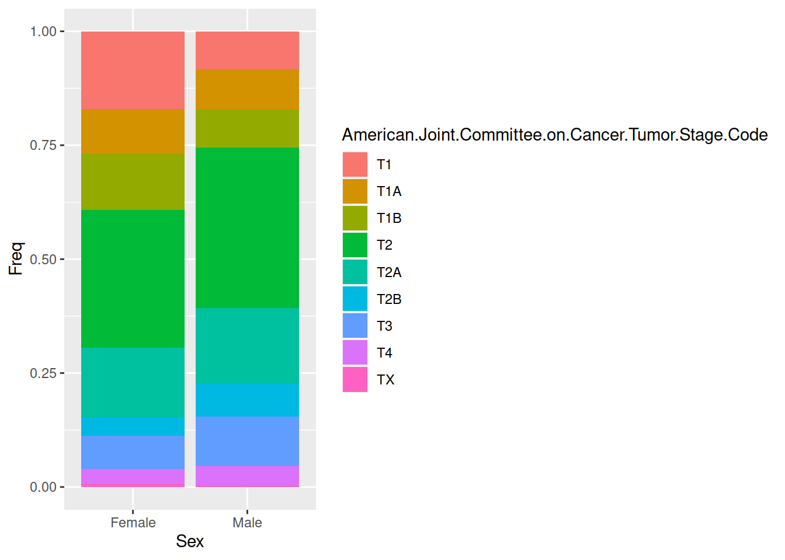

Last updated: 2021-02-19
Checks: 7 0
Knit directory: try_workflowr/
This reproducible R Markdown analysis was created with workflowr (version 1.6.2). The Checks tab describes the reproducibility checks that were applied when the results were created. The Past versions tab lists the development history.
Great! Since the R Markdown file has been committed to the Git repository, you know the exact version of the code that produced these results.
Great job! The global environment was empty. Objects defined in the global environment can affect the analysis in your R Markdown file in unknown ways. For reproduciblity it’s best to always run the code in an empty environment.
The command set.seed(20210219) was run prior to running the code in the R Markdown file. Setting a seed ensures that any results that rely on randomness, e.g. subsampling or permutations, are reproducible.
Great job! Recording the operating system, R version, and package versions is critical for reproducibility.
Nice! There were no cached chunks for this analysis, so you can be confident that you successfully produced the results during this run.
Great job! Using relative paths to the files within your workflowr project makes it easier to run your code on other machines.
Great! You are using Git for version control. Tracking code development and connecting the code version to the results is critical for reproducibility.
The results in this page were generated with repository version 9a04487. See the Past versions tab to see a history of the changes made to the R Markdown and HTML files.
Note that you need to be careful to ensure that all relevant files for the analysis have been committed to Git prior to generating the results (you can use wflow_publish or wflow_git_commit). workflowr only checks the R Markdown file, but you know if there are other scripts or data files that it depends on. Below is the status of the Git repository when the results were generated:
working directory clean
Note that any generated files, e.g. HTML, png, CSS, etc., are not included in this status report because it is ok for generated content to have uncommitted changes.
These are the previous versions of the repository in which changes were made to the R Markdown (analysis/my_first_project.Rmd) and HTML (docs/my_first_project.html) files. If you’ve configured a remote Git repository (see ?wflow_git_remote), click on the hyperlinks in the table below to view the files as they were in that past version.
| File | Version | Author | Date | Message |
|---|---|---|---|---|
| Rmd | 9a04487 | leoniethomas | 2021-02-19 | wflow_publish(“analysis/my_first_project.Rmd”) |
| html | 27f467e | leoniethomas | 2021-02-19 | Build site. |
| html | 0df5867 | leoniethomas | 2021-02-19 | Build site. |
| Rmd | 788b74c | leoniethomas | 2021-02-19 | wflow_publish(“analysis/my_first_project.Rmd”) |
tcga <- read.delim("/home/lthomas/Documents/Studium/Master/Seminare/Bioinfo_Seminare/R_course/Rcourse/inst/extdata/luad_tcga_pan_can_atlas_2018_clinical_data.tsv")
tcga <- tcga[,apply(tcga,2,function(x){ !(sum(is.na(x)) == length(x))})] %>%
mutate(days_since_birth = Birth.from.Initial.Pathologic.Diagnosis.Date/356.25)
table(select(tcga,Diagnosis.Age))
33 38 39 40 41 42 43 44 45 46 47 48 49 50 51 52 53 54 55 56 57 58 59 60 61 62
1 1 1 2 4 5 1 1 4 2 3 3 5 5 8 11 6 9 8 12 10 15 21 21 21 14
63 64 65 66 67 68 69 70 71 72 73 74 75 76 77 78 79 80 81 82 83 84 85 86 87 88
15 13 18 12 17 14 20 26 19 22 15 19 15 16 14 7 8 5 9 3 2 5 3 1 2 1 table(select(tcga, Sex))
Female Male
275 239 table(select(tcga, Race.Category))
American Indian or Alaska Native Asian
1 8
Black or African American White
52 388 table(tcga$American.Joint.Committee.on.Cancer.Tumor.Stage.Code)
T1 T1A T1B T2 T2A T2B T3 T4 TX
67 48 54 167 82 28 46 19 3 To look at the association between two categorical variables we can perform a chi squared test Study the relationshipo between sex and satisfaction.cat using a contingency table and a bar plot.
tcga %>% filter(!is.na(Sex)) %>% filter(!is.na(American.Joint.Committee.on.Cancer.Tumor.Stage.Code)) %>% ggplot(aes(Sex,fill=American.Joint.Committee.on.Cancer.Tumor.Stage.Code)) + geom_bar()
| Version | Author | Date |
|---|---|---|
| 0df5867 | leoniethomas | 2021-02-19 |
t <- tcga %>% select(Sex,American.Joint.Committee.on.Cancer.Tumor.Stage.Code) %>% table()
t American.Joint.Committee.on.Cancer.Tumor.Stage.Code
Sex T1 T1A T1B T2 T2A T2B T3 T4 TX
Female 47 27 34 83 42 11 20 9 2
Male 20 21 20 84 40 17 26 10 1Use prop.table and geom_bar(stat="identity") to report the relative frequencies of satisfaction between the sexes.
prop.table(t, margin =1) American.Joint.Committee.on.Cancer.Tumor.Stage.Code
Sex T1 T1A T1B T2 T2A
Female 0.170909091 0.098181818 0.123636364 0.301818182 0.152727273
Male 0.083682008 0.087866109 0.083682008 0.351464435 0.167364017
American.Joint.Committee.on.Cancer.Tumor.Stage.Code
Sex T2B T3 T4 TX
Female 0.040000000 0.072727273 0.032727273 0.007272727
Male 0.071129707 0.108786611 0.041841004 0.004184100prop.table(t, margin =1) %>% as.data.frame() %>% ggplot(aes(x=Sex,y=Freq,fill=American.Joint.Committee.on.Cancer.Tumor.Stage.Code)) + geom_bar(stat="identity")
| Version | Author | Date |
|---|---|---|
| 0df5867 | leoniethomas | 2021-02-19 |
Test this relationship using the chi.test command on the contingency table.
c<-chisq.test(t)Warning in chisq.test(t): Chi-squared approximation may be incorrectc
Pearson's Chi-squared test
data: t
X-squared = 15.323, df = 8, p-value = 0.05316tcga$Sex <- as.factor(tcga$Sex)
tcga$American.Joint.Committee.on.Cancer.Tumor.Stage.Code <- as.factor(tcga$American.Joint.Committee.on.Cancer.Tumor.Stage.Code)
m1 <- lm(American.Joint.Committee.on.Cancer.Tumor.Stage.Code ~ Sex , data = tcga %>% filter(!is.na(Sex)) %>% filter(!is.na(American.Joint.Committee.on.Cancer.Tumor.Stage.Code)))Warning in model.response(mf, "numeric"): using type = "numeric" with a factor
response will be ignoredWarning in Ops.factor(y, z$residuals): '-' not meaningful for factorsm1
Call:
lm(formula = American.Joint.Committee.on.Cancer.Tumor.Stage.Code ~
Sex, data = tcga %>% filter(!is.na(Sex)) %>% filter(!is.na(American.Joint.Committee.on.Cancer.Tumor.Stage.Code)))
Coefficients:
(Intercept) SexMale
3.7855 0.5284 tidy(m1)Warning in Ops.factor(r, 2): '^' not meaningful for factors# A tibble: 2 x 5
term estimate std.error statistic p.value
<chr> <dbl> <dbl> <dbl> <dbl>
1 (Intercept) 3.79 NA NA NA
2 SexMale 0.528 NA NA NA
sessionInfo()R version 4.0.4 (2021-02-15)
Platform: x86_64-pc-linux-gnu (64-bit)
Running under: Ubuntu 20.04.1 LTS
Matrix products: default
BLAS: /usr/lib/x86_64-linux-gnu/blas/libblas.so.3.9.0
LAPACK: /usr/lib/x86_64-linux-gnu/lapack/liblapack.so.3.9.0
locale:
[1] LC_CTYPE=en_US.UTF-8 LC_NUMERIC=C
[3] LC_TIME=en_GB.UTF-8 LC_COLLATE=en_US.UTF-8
[5] LC_MONETARY=en_GB.UTF-8 LC_MESSAGES=en_US.UTF-8
[7] LC_PAPER=en_GB.UTF-8 LC_NAME=C
[9] LC_ADDRESS=C LC_TELEPHONE=C
[11] LC_MEASUREMENT=en_GB.UTF-8 LC_IDENTIFICATION=C
attached base packages:
[1] stats graphics grDevices utils datasets methods base
other attached packages:
[1] broom_0.7.4 openintro_2.0.0 usdata_0.1.0
[4] cherryblossom_0.1.0 airports_0.1.0 forcats_0.5.1
[7] stringr_1.4.0 dplyr_1.0.4 purrr_0.3.4
[10] readr_1.4.0 tidyr_1.1.2 tibble_3.0.6
[13] ggplot2_3.3.3 tidyverse_1.3.0 workflowr_1.6.2
loaded via a namespace (and not attached):
[1] Rcpp_1.0.6 lubridate_1.7.9.2 utf8_1.1.4 assertthat_0.2.1
[5] rprojroot_2.0.2 digest_0.6.27 R6_2.5.0 cellranger_1.1.0
[9] backports_1.2.1 reprex_1.0.0 evaluate_0.14 httr_1.4.2
[13] highr_0.8 pillar_1.4.7 rlang_0.4.10 readxl_1.3.1
[17] rstudioapi_0.13 whisker_0.4 rmarkdown_2.7 labeling_0.4.2
[21] munsell_0.5.0 compiler_4.0.4 httpuv_1.5.5 modelr_0.1.8
[25] xfun_0.21 pkgconfig_2.0.3 htmltools_0.5.1.1 tidyselect_1.1.0
[29] fansi_0.4.2 crayon_1.4.1 dbplyr_2.1.0 withr_2.4.1
[33] later_1.1.0.1 grid_4.0.4 jsonlite_1.7.2 gtable_0.3.0
[37] lifecycle_1.0.0 DBI_1.1.1 git2r_0.28.0 magrittr_2.0.1
[41] scales_1.1.1 cli_2.3.0 stringi_1.5.3 farver_2.0.3
[45] fs_1.5.0 promises_1.2.0.1 xml2_1.3.2 ellipsis_0.3.1
[49] generics_0.1.0 vctrs_0.3.6 tools_4.0.4 glue_1.4.2
[53] hms_1.0.0 yaml_2.2.1 colorspace_2.0-0 rvest_0.3.6
[57] knitr_1.31 haven_2.3.1